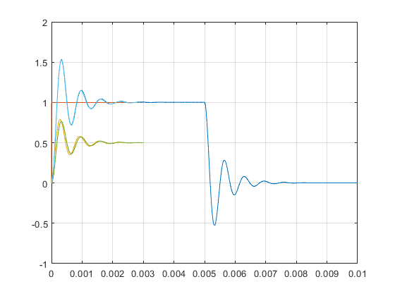

A=dlmread('Vout.txt'); x = A(:,1); y = A(:,2); plot(x,y) grid on hold on C1 = .0000001; %10^-6 C2 = .0000001; %10^-6 % G = [1, 0, 0, 0, 0; % 1/R1, 1/R1-1/R2-1/R3, 1/R3, 0, 0; % 0, 1/R2, -1/R3, 0, 0; % 0, 0, 1/R4+1/R5, -1/R4, 0; % 0, 0, 1, 0, -1]; M = [0, 0, 0, 0, 0; 0, -C1, 0, 0, C1; 0, 0, -C2, 0, 0; 0, 0, 0, 0, 0; 0, 0, 0, 0, 0]; b =[1; 0; 0; 0; 0]; options=odeset('Mass',M,'RelTol', (.000000001)); x0=[0 ;0 ;0 ;0 ; 0]; [t,x]=ode23t(@transient2, [0 .003], x0, options); plot(t,x) hold off function F=transient2(t,x) % This function provides the right-hand side of the % differential equation for the Matlab solver. F=[0;0;0;0;0]; R1=5000; R2=5000; R3=400; R4 = 1000; R5 = 1000; % Vector F is initialized. % These are the resistor values for our circuit. If you want % to perform a simulation with different R1, R2 and R3, all you % need to do is change this line. if (t>=0)&&(t<=1e-6) h=1e6*t; else h=1; end % h(t) represents an approximation of the step function, % with a rise time of 1 microsecond. F(1)=x(1)-h; F(2)=-(1/R1)*x(1)+(1/R1+1/R2+1/R3)*x(2)-(1/R3)*x(3); F(3)=-(1/R3)*x(2)+(1/R3)*x(3); F(4)=(1/R4+1/R5)*x(4)+(-1/R4)*x(5); F(5)=x(3)-x(4); % This is the right-hand side of the DAE. It is written in terms of R1, R2 % and R3, so that you don't need to rewrite the code every time your % element values change. end
